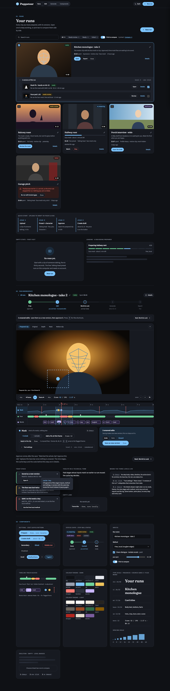
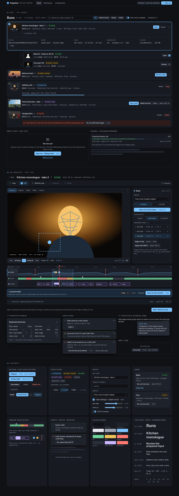
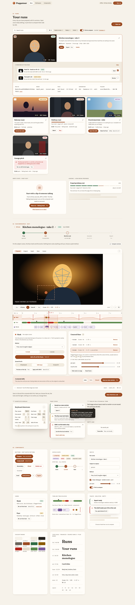
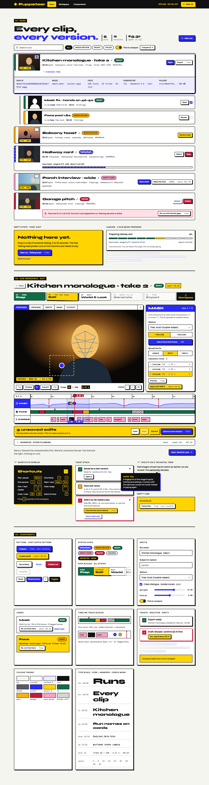

Visual directions for the tidy pass
Each file shows the same Runs page, the same Edit step of the run workspace, and the same component set, so you compare the design, not the content. Every file is self-contained, works from 380 px up (no horizontal page scroll; the timeline scrolls inside its own panel), and lists its colour tokens, type and spacing scales and its WCAG AA contrast ratios in a comment at the top.

Hybrid · the owner's pick A look + B layout · dark default, light theme behind the toggle
B's layout, editorial type, thumbnail cards and step rail with A's dark low-chroma palette and one accent. Progressive disclosure in three levels: the step body (1), remembered collapsibles such as "Tool settings" (2), and one Details drawer on every step and card (3). The rail switches steps with history entries; the browser Back button works.
darklightGenerate stepDetails openhybrid-dark-desktop.pnghybrid-dark-380.pnghybrid-light-desktop.pnghybrid-light-380.pnghybrid-details-desktop.pnghybrid-generate-desktop.png



A · Calm editing suite dark
A low-chroma dark UI in the spirit of a pro NLE: one ice-blue accent, monospace timecode everywhere, dense but quiet, the three tracks are the hero. For someone who will spend hours in the Edit step.
desktop and 380 shots:a-desktop.pnga-380.png


B · Light studio paper
Warm paper-light surfaces, generous whitespace, soft shadows and an editorial serif for titles. Cards carry real thumbnails and a sentence of plain language; the step bar is a gentle progress rail. The friendliest for a first-time user.
desktop and 380 shots:b-desktop.pngb-380.png


C · Bold expressive colour blocks
Electric blue, signal yellow and ink on warm white, big Syne display type, hard 2 px outlines with offset shadows and CSS-only motion hints (hover lift, breathing playhead, striped progress). Loud, but every pair is AA or better.
desktop and 380 shots:c-desktop.pngc-380.png